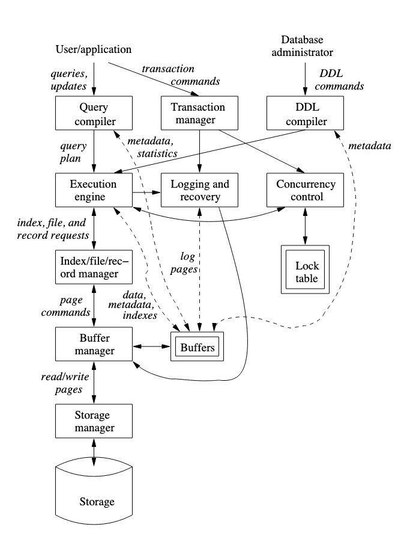

Introducción
Este es un apunte sobre la clase Bases de Datos de la Universidad de Buenos Aires dada en el segundo cuatrimestre de 2022.
No es un apunte oficial, ni tiene la función de serlo y no se recomienda usar para estudiar para los parciales. A pesar de eso, espero que les pueda servir de ayuda. Cualquier sugerencia o corrección es bienvenida.
Teórica
Teórica - 17/08
Se definió el concepto de DER (Diagramas Entidad Relación) describe la interrelación interrelated de cosas de interés dentro del alcance del dominio de un problema.
Algunos conceptos a utilizar
- Entidad: Objeto relevante para el sistema. Tiene sentido tenerla cuando tiene características propias. Se representa con un cuadrado
- Atributo: Cualquier característica relevante de la entidad propia. Se representa con un círculo
- Atributo simple: Atributo sin características especiales
- Atributo identificatorio: Identificar una instancia unívocamente
- Atributo compuesto: Aquel que se puede dividir
- Atributo multivariado: Cuando podria ser mas de uno
- Interrelaciones: Vínculo entre dos entidades. Se representa con un rombo. Contiene varios aspectos:
- Interrelaciones identificatorias.
- Cardinalidad: tiene que ser una relación ACTUAL. Explica la cantidad de relaciones que se pueden dar
- 1-1
- 1-n
- n-m
- Participación:
- Parcial: Si existe alguno que puede no cumplir la relación
- Completa: Si todos cumplen con la relación
- Relaciones ternarias: Se necesitan las 3 identidades al mismo tiempo para que la relación funcione. Es bastante útil pero aparece muy poco
- Agregación: Vincular una interrelación con una identidad. Además esta vinculación tiene que ser temporalmente posterior con respecto a la interrelación. Se denota con un rectángulo conteniendo a la interrelación y sus entidades vinculadas
- Jerarquías de Especialización: Cada subentidad "hereda" todas las interrelaciones y atributos de la superentidad. No puede existir un elemento en una subentidad que no figure en la superentidad
- Cobertura total: Cada elemento de la superentidad debe estar en al menos una de las subentidades
- Cobertura parcial: PUede haber elementos de la superentidad que no estén en ninguno de las subentidades
- Jerarquías disjuntas: Cada elemento de la superentidad está a lo sumo en una subentidad
- Jerarquías con solapamiento: Los elementos de la superentidad pueden estar en más de una subentidad
Pongo un resúmen del primer capítulo de Database Systems: The Complete Book y del capítulo 2 del Principles of Database and Knowledge Base Systems
Database Systems: The Complete Book
- Sucintamente, una base de datos es una colección de información que se mantiene por un período de tiempo (por lo general largo).
- Es una colección de datos que es manejada por un DBMS. Este tiene
que permitir y/o asegurar:
- crear nuevas bases de datos y especificar sus schemas
- hacer consultas y modificaciones sobre los datos con un query language o data-manipulation language
- almacenar grandes cantidades de información con acceso eficiente para las operaciones de 2
- persistencia/durabilidad de la información: o sea que se pueda recuperar la data ante fallas
- Aislamiento y Atomicidad de operaciones (o transacciones como se ve más adelante)
... (Un poco de historia)
Overview de un DBMS

Hay 2 tipos de usuarios de la base de datos:
- Usuarios y aplicaciones
- El administrador de la base de datos
Los comandos que uno y otro ejecutan toman distintos flujos dentro del dbms aunque comparten subsistemas en común.
Data-Definition Language Commands
El administrador usa un DDL (Data Definition Language) para definir la estructura y constraints de las tablas. Estas instrucciones las parsea un procesdor de DDLs y se envían el execution engine, y hacia los index/file/record managers.
Procesamiento de Queries
El usuario en cambio usa un DML (Data Manipulation Language) para armar consultas que modifican o extraen información de la base de datos. Estas consultas las atienden dos subsistemas:
- Query: El primer subsistema consiste en el query compiler + execution engine + buffer manger, y se encarga de la respuesta en sí de la query.
- Transacciones: Las transacciones son operaciones que se tienen
que realizar de forma atómica y aisladas unas de otras (da lo mismo
si ejecutan al mismo tiempo que si no), y a su vez estas tienen que
poder ser persistidas. El subsistema que se encarga de procesar
transacciones entonces está compuesto por:
- Un scheduler, para garantizar atomicidad y aislamiento
- Un logging & recovery manager para la persistencia de las transacciones
Manejo de almacenamiento y buffers
A esto lo componen dos piezas:
- El storage manager, que sirve de interfaz entre el disco y el resto del DBMS
- El buffer manager, que maneja la memoria principal (RAM) organizándola en buffers en los que se cargan:
- Data
- Metadata
- Log Records
- Estadísticas
- Índices
Procesamiento de transacciones
El subsistema que procesa transacciones se encarga de 3 tareas:
- logging, en el que se escribe un log en disco cada cambio en la base de datos. Esto sirve para garantizar persistencia de las transacciones. El log manager usa alguna política para que en conjunto con el recovery manager se pueda restaurar la DB a un estado consistente en caso de fallas.
- concurrency control, manejado por el schedular que mantiene locks sobre los recursos.
- deadlock resolution. De esto se encarga el transaction manager, cancelando algunas transacciones hasta que se liberan los recursos necesarios como para continuar con la ejecución.
Propiedades ACID:
- A de atomicity de la ejecución de transacciones.
- I de isolation ya que las transacciones se tienen que ejecutar como si ninguna otra se haya ejecutado en el medio
- D de durability ya que las transacciones no deben perderse
- C de consistencia (ojo, con el surgimiento de bases de datos distribuidas/sistemas distribuidos, se fue transicionando a otros esquemas en donde no necesariamente se garantiza consistencia si no algo un poco más débil. Para más info buscar sobre CAP theorem)
Query Processor
Al query processor lo componen dos partes:
- El query compiler, que consiste de un parser, preprocessor y un optimizer para las queries y genera un query plan.
- El execution engine al que le llegan los query plans y tiene que llevarlos a cabo.
Principles of Database and Knowledge Base Systems (ch. 2)
Teórica - 24/08
Repaso:
- Qué es una entidad? Un objeto relevante para mi problema
- Qué es un atributo? Una característica relevante de una entidad
- Una interrelación? Una relación entre dos entidades
Había quedado algo pendiente: las bases de datos relacionales se crearon en el 68' (Edgar Cobb)
Todas las bd relacionales no eran relacionales de verdad
Propuso un gran avance para lo que era ese momento:
-
Hasta ese momento había cobol
-
Para guardar los datos, guardaban los datos en un csv casi
- Estaba todo muy pegado a la parte física
- Tengo que saber dónde estaba el archivo, el formato, la cantidad de campos, etc.
- Estaba todo muy pegado a la parte física
-
El avance de Cobb es separar en "capas"
-
Vistas - Externo
- Independencia Lógica: El usuario final puede consumir los datos sin saber dónde están, ni en qué tabla.
- Ej: La afip puede cambiar todo el sistema y vos seguir viendo el mismo ticket
- Independencia Lógica: El usuario final puede consumir los datos sin saber dónde están, ni en qué tabla.
-
Tablas - Conceptual
- Los que hacen desarrollo suelen estar a este nivel
- No necesito saber cuántos campos tiene la tabla
- Independencia física
-
disco - Interno (DBA)
- sabe dónde están los archivos, el formato, etc
Algo relacionado a la idea: Data as a Service
- Los datos tienen mucha complejidad
- Cada vez se trata de que esa lógica esté más aislada
Modelo Relacional
1 Tabla = 1 Relación
R(A, B, C, D)(Los dominios, a.k.a atributos)- \[R \subset DOM(A) \times DOM(B) \times DOM(C) \times DOM(D) \]
- R es un conjunto
- \[{(a, b), (a, b)} = {(a, b)}\]
- o sea que no tengo dos registros iguales
- una relación siempre admite clave
- como las bases de ese momento no obligan a crear claves primarias entonces las bases de datos de ese momento no eran relacionales posta
- No puedo asumir que los datos están guardados en un orden
- oracle guarda los datos físicos según primary key, sin embargo eso es una desición de implementación. El modelo no te obliga a hacer eso
- Puedo ordenar al recuperar la data
Restricciones de Integridad
recuerdo: esquema == la estructura de la base de datos
La base de datos va a chequear esto SIEMPRE. Rebota todo lo que no lo cumpla. Por eso es importante transladar todo lo posible al esquema.
- De dominio
- tipo de datos
- check constraint (ej, rango)
- Nullidad
- Null es NADA
- De clave
- Unicidad
- Super Clave
- Clave Candidata (Clave Primaria) (Unicidad + Minimilidad)
- La DB no implementa Minimilidad, no tiene forma de verificar si lo que le digo es mínimo o no
- Minimilidad = No le sobran campos, no depende del tamaño
- Foránea
- Unicidad
\[ R(A_1,\dots,A_n) \\ T \subseteq {A_1,\dots,A_n} \\ \]
T es SC de R sii \[ t_1[T] = t_2[T] \implies t_1=t_2 \]
T es CC de R sii
- T es SC
- No existe una clave S contenida en T tal que S es SC
warning: No borrar en cascada
Pasaje de DER a tabla
El pasaje es automático. Hay que seguir las siguientes reglas nomás:
- Cada entidad tiene 1 tabla
- Todas las relaciones
M:Ntienen una tabla - Si tengo una
1:N, va del lado del N - En una ternaria
N:M:1, creo tabla y pongo como PKs la clave de laNy la de laM
En el ejemplo de las diapos:
- Alumno
- LU(PK)
- Calle
- Nro
- Piso
- Depto
Podría definir un tipo compuesto con calle, nro, piso, depto. Puedo reutilizarlo también en otras tablas.
- Materia
- Código(PK)
- Nombre
- legajo (FK - Profesor)
Como profesor es parcial, lo pongo en materia porque toda materia tiene un profesor (un profesor capaz que no tiene materia)
- Curso
- Código (PK)(FK - materia)
- Turno (PK)
Es una sóla primary, pero es compuesta por ser entidad débil. Cuando uno define las FK tiene que decir de qué tabla son.
- MailAlumno
- LU (PK) (FK - alumno)
- email (PK)
Los atributos multivaluados necesitan ir a una tabla aparte
- Profesor
- legajo(PK)(FK - Profesor)
Es una especialización de Docente, así que hereda la clave de docente
-
Docente
- legajo (PK)
-
Rol
- id_rol(PK)
Tengo las entidades y los atributos, me faltan las interrelaciones
- Rindió
- LU (PK) (FK - Alumno)
- Código (PK) (FK - Materia)
- FechaExamen (PK)
Acá tres atributos conforman la PK
- Quiere Dictar
- legajo (FK - Profesor)
- código (FK - Materia)
Por eso necesitaba la especialización, porque con esto restrinjo a tener un profesor
- Dicta
- legajo (PK) (FK - Docente)
- id_rol (FK - Rol)
- código (PK) (FK - Curso)
- turno (PK) (FK - Curso)
código + turno forman la FK de Curso, y la PK se forma con las de las N:M pero no la 1
Ahora Dicta si tiene FK del docente
Ejercicio: Cómo hago cuando tengo agregación? Usar el ejemplo de Curso, Materia, Encuesta
- La PK es el id_encuesta
- El linkeo va en la tabla de Encuesta
- La FK se forma con el legajo y el código
- La FK es Fk de la interrelación Cursa (tiene sentido porque en una agregación estoy considerando la interrelación como una entidad)
Lenguajes de Consulta
Recuerdo: DML - Data Manipulation Language
Existen 3 lenguajes para este problema
- AR
- SQL es una implementación de Álgebra Relacional
- CRT
- CRD
Álgebra Relacional
las ops de AR tienen que ser cerradas respecto al dominio original
Ops Unarias:
- proyección
- Recupero un/unos campo/s de una tabla
- \[\Pi_{legajo}(ALUMNO)\]
- Es el
SELECT DISTINCT(caro) de SQL.
- selección
- recupera registros que cumplan una propiedad determinada
- traigo los alumnos cuyo código de carrera sea A: \[\sigma_{codCarrera = "A"}(ALUMNO)\]
- renombre
- Es el
ASde SQL - De campos
- De relaciones
- Es el
ej: legajo de los alumnos que cursan la carrera A \[\Pi_{legajo, codCarrera}(\sigma_{codCarrera = "A"}(ALUMNO))\]
Ops Binarias:
- Operaciones sobre relaciones "Union Compatible"
- Tienen que compartir los mismos campos (nombre y tipo)
- Unión
- Intersección
- Diferencia
- De qué me sirve? Puedo separar en "partes la query" y tomar uniones de cada parte
- Otras Operaciones
- Producto Cartesiano
- Natual Join: junto dos relaciones por un campo en común
- Outer Join: Me permite asegurar que me traigo todos los registros de una de las dos tablas aunque no matcheen
- También tengo Full Outer Join
- División: me permite obtener todos los registros que tienen un valor que aparece con todos los valores del conjunto que divide
- Esta no está en SQL
- El de arriba Siempre tiene que tener un campo más que el de abajo
EJ Joins: "nombre (del alumno) y legajo de las materias que aprobó por lo menos un alumno" nota: No pongan joins de cosas que no van a usar
Ej División: Nombre de los alumnos que aprobaron todas las materias de su carrera
- Agarro todas las materias aprobadas por el alumno y lo divido por todas las que cursó
Cálculo Relacional de Tuplas (CRT)
- Más en términos de proposiciones
- fórmulas
- atómicas
- R E Rel
- R.a op S.b
- R.a op constante o constante op R.a
- Cuantificadores
- query: {t / p(t)}
- atómicas
- Inseguridad del CRT/CRD
- potencialmente puede devolverte un conjunto infinito
- {t \ not p(t)}
- para solucionarlo forzando a que el resultado pertenezca al dominio/tabla madre
Práctica
Práctica - 19/08
Presentación
- 2 parciales
- 1er parcial
- DER/MER
- Normalización
- AR CRT
- 2do parcial
- concurrencia y recuperabilidad
- noSQL
- 1er parcial
- Laboratorios
- SQL
- Optimización
Overview MER
Todo DER tiene que tener claves y atributos, (a veces los vamos a obviar). El MER lo hacemos con Diagramas Entidad Relación. Ahí tenemos:
- relaciones
- unarias
- binarias
- ternarias
- cardinalidad: nro de elementos de una entidad que se relacionan con otro.
- uno a uno
- uno a muchos
- muchos a muchos
- participación: cuántos elementos del conjunto pertenecen a la relación:
- parcial: sólo una parte del conjunto está relacionado con algún otro.
- total: todos están en algún elemento de la relación.
Ej:
graph LR; B[se relaciona]-- 1 -->A[Pelicula]; B[se relaciona]-- N -->C[Estudio];
-
rol: el rol de una entidad en una relación.
- en una unaria es necesario agregarlo para evitar ambiguedades.
- siempre tiene que haber una participación parcial
-
Las únicas interrelaciones que admiten atributos son las M:N.
- Más de 1, 2 atributos no deberían haber. Pensar si esa relación no es mejor una entidad.
- No debería tener que agregar un atributo identificador artificial
Ternarias
- para leerlo tomo de a pares. ej:
Un instructor en un conjunto de semestres da varias materias
- se toman de a pares las entidades, y tiene que tener sentido que
para cada par de elementos de dos entidades tienen que estar
relacionado con uno del resto.
- Ojo, es distinto a participación total/parcial
- binarias o ternarias?
- Idealmente quiero el modelo más simple
- Pero hay casos que binaria no alcanza. Ej:
José ensenó bases de datos en el 1er cuat de 1964.
- Sin embargo, con una binaria puedo saber que:
- José ensenó bases de datos
- Bases de datos se dio en el 1er cuat de 1964
- José ensenó en el 1er cuat de 1964
- ... No puedo recuperar toda la info
- cuando le meto la ternaria, me doy cuenta de que hay redundancia y puedo sacar las binarias
Jerarquías
- Particiono con algún sentido una entidad
- una entidad e1, e2 cumple que
es_un(e1, e2)cuando es una subentidad de otra
- una entidad e1, e2 cumple que
- HEREDAN la clave de la superentidad
- cobertura
- total, cuando cubro todo
- parcial (marco con circulito en la superentidad como con las relaciones comunes)
- solapamiento
- disjuntas (marco con una
d) - con solapamiento
- disjuntas (marco con una
- pistas para subentidades:
- una parte siempre se relaciona con algo y la otra no
- una parte tiene un atributo que la otra no
- puedo armar varias jerarquías para una misma entidad
graph LR; A[Clase] --> B( ); B( ) -- tipo -->C[Laboratorio]; B( ) -->D[Practica];
Agregación
Supongamos por ejemplo, que tenemos docentes, materias y algunos cursos realizan encuestas de evaluación docentes. Un docente dando una materia puede no recibir encuestas, entonces no puedo usar una ternaria. Y si la encuesta fuese obligatoria? Tampoco, porque no puedo cargar al docente/materia hasta recibir la primer encuesta.
Con agregación, trato a una interrelación (junto a las entidades vinculadas) como una entidad en sí mismo. Sólo es posible en relaciones M:N
Hay un apunte sobre todo esto en el campus.
graph TD; A-->B; A-->C;
Consideraciones de diseño
- Respetar requerimientos
- evitar redundancia
- entidad o atributo? ej:
graph TD; A[Empleado]; C[Cargo]; N[Nombre]; L[Nro Legajo]; A --> C; A --> N; A --> L;
- Entidad o interrelacion?
- Muchos atributos?
- Se complica la búsqueda de información?
- Entidad débil
- Una entidad que depende completamente de otra
- La clave se forma con algún ID + la clave de la fuerte
- Ej: items de una factura, asientos de un avión
- Sustantivos en singular para entidades
- Verbos para interrelaciones
- de izquierda a derecha y arriba a abajo
- replicar entidades (agregarles una marca para que se note que es la misma entidad)
- Elegir buenas claves
- Inmutable
- En muchos casos se genera una clave artificial (surrogateKey)
- Ojo con trampas
- Fan traps
- El camino entre entidades es ambiguo (suele pasar con varias 1:N)
- Sink traps
- Parece que hay una relación entre entidades pero en el camino se pierde.
- Suele pasar cuando hay relaciones parciales.
- En el parcial, prestar atención a los requerimientos de las consultas.
- Fan traps
- Las cosas importantes que no se pueden representar van a la sección de restricciones adicionales
Ejercicios
Ejercicio 1
Casa de subastas quiere registrar las transacciones que realiza.
- Los productos se agrupan en lotes (nro catálogo, descripción, precio de salida).
- Para cada producto se almacena el código de producto, nombre, descripción y foto.
- Los clientes(código, nombre, apellido, dni, mail) hacen pujas (fecha/hora, monto)
graph LR; C[Cliente]; P[Producto]; L[Lote]; H[Hace una Puja]; PL[Pertenece a un]; C --> Z1[**codigo**] C --> Z2[nombre] C --> Z3[dni] C --> Z4[mail] P --> X1[**codigo**] P --> X2[descr.] P --> X3[nombre] P --> X4[foto] L --> Y1[**nro catalogo**] L --> Y2[descr.] L --> Y3[precio] P -- N --> PL L -- 1 --> PL C -- M --> H; L -- N --> H; H --> FH[fecha/hora] H --> MON[Monto]
-
Hay productos que no están asociados a ningún lote (part. parcial)
-
En este modelo, el cliente sólo puede pujar una vez. Para solucionarlo puedo:
- Marcar como clave la fecha y hora
- Hacer una puja como entidad
- Variante: Puja es una entidad débil con clave fecha/hora
- No puedo meterlo directo como clave porque puedo tener varios clientes pujando al mismo tiempo en salas distintas.
- Variante: Puja es una entidad débil con clave fecha/hora
-
No confundir: no me sale modelar esto con agrego restricciones porque posta no se puede expresar en el der
Ejercicio 2
Atributos modelo y marca pasarlos a entidades, y ojo con cómo armo las interrelaciones (tiene que ser auto <-> modelo <-> marca)
- No busquen cosas que no hay, o sea leer bien todo el enunciado y no buscar entidades débiles, relaciones ternarias, agregaciones, etc.
Ejercicio 3
- domicilio asumo que no hay drama
- provincias son pocas así que las puedo hacer como tabla
- pregunta: armo una jerarquía con médico y paciente? NO Pensar,
qué sería el
es_un? mamífero? - el ingreso no sería una entidad débil? No, porque en el enunciado aclara que tienen un código autoincremental
Ejercicio 4
No lo llegamos a ver en clase, pero un poco la idea va de que tengo 3 entidades:
- Operario
- Tarea
- Inspector
Inicialmente podría pensar que un Operario realiza Tareas y cada tarea puede tener varios Inspectores. Si los inspectores revisan a todos los operarios que están haciendo esa tarea entonces estamos ok. Pero si el inspector evalúa al operario que está haciendo esa tarea entonces no nos alcanza, pues estaríamos cayendo en la trampa del abanico.
En ese segundo caso, una solución sería una ternaria entre operario, inspector y tarea, no? NO, porque no necesariamente voy a tener inspectores en todos los operarios que hagan tareas. Es por eso que en este caso podemos usar una agregación que relaciona al operario haciendo una tarea con los inspectores.
Práctica - 26/08
CRT - Cálculo Relacional de Tuplas
Ejercicio 1
Listar nombre y salario de aquellos empleados que trabajan en el Depto cuyo detalle es RRHH
Sol:
\[ \{ t / \exists e \in \text{EMPLEADO} \land \exists d \in \text{DEPARTAMENTO} \\ \land d.\text{detalle} = \text{RRHH} \land e.\text{depto} = d.\text{IDD} \\ \land t.\text{nombre} = e.\text{nombre} \land t.\text{salario} = e.\text{salario}\} \]
Ejercicio 2
Proveedores(idProv, nombre, direccion) Productos(idProd, nombre, color) Catalogo(idProv, idProd, precio)
- Encontrar los nombres de los proveedores que proveen algún producto rojo.
- Buscar los idProv para los proveedores que proveen todos los productos.
- Buscar los nombres de productos que no están en ningún catálogo.
Sol:
a) \[ \{ t / \exists prov \in \text{PROVEEDOR} \land \exists pr \in \text{PRODUCTO} \land \exists c \in \text{CATALOGO} \\ \land pr.\text{color} = \text{"rojo"} \land pr.\text{idProd} = c.\text{idProd} \\ \land prov.\text{idProv} = c.\text{idProv} \} \] b) \[ \{ t / \forall prod \in \text{PRODUCTO} \implies \exists c \in \text{CATALOGO} \\ \land c.\text{idProd} = prod.\text{idProd} \land c.\text{idProv} = t.\text{idProv} \} \] c) \[ \{ t / \exists prod \in \text{PRODUCTO} \land \nexists c \in \text{CATALOGO} \\ \land c.\text{idProd} = prod.\text{idProd} \land prod.\text{nombre} = t.\text{nombre} \} \]
bonus: encontrar los nombres de los proveedores que proveen todos los productos rojos
Sol:
How about: \[ \{ t / \forall prod \in \text{PRODUCTO} \land prod.\text{color} = \text{"rojo"} \implies \exists c \in \text{CATALOGO} \\ \land c.\text{idProd} = prod.\text{idProd} \land c.\text{idProv} = t.\text{idProv} \} \]
Si no tengo productos rojos?: We're screwed. La precondición del implica siempre es falsa, el implica es verdadero
Y antes en el b) no tenía ese problema? Bueno, sí... pero el uno caso en que eso pasa es cuando no hay productos y estoy predicando sobre el conj. vacío de tuplas. No nos va a interesar mucho eso, aunque podría chequearlo si tengo ganas
Entonces puedo probar con \[ \{ t / (\exists prod' \in \text{PRODUCTO} \land prod'.\text{color} = \text{"rojo"}) \land \\ \forall prod \in \text{PRODUCTO} \left( prod.\text{color} = \text{"rojo"} \implies \exists c \in \text{CATALOGO} \\ \left( c.\text{idProd} = prod.\text{idProd} \land c.\text{idProv} = t.\text{idProv} \land \exists prov \in \text{PROVEEDORES} \\ \left( prov \in \text{PROVEEDOR} \land c.\text{idProv} = prov.\text{idProv} \land prov.\text{nomre} = t.\text{nombre} \right)\right)\right)\} \]
Ejercicio 3
Listar el nombre de los empleados que no tienen Supervisor asignado
Skipped
AR - Álgebra Relacional
Ops:
\[ R \cup S \\ R \cap S \\ R / S \\ R - S \\ \rho \left( a1 \rightarrow a2, b1 \rightarrow b2, R \right) \\ \sigma_{predicado}(R) \\ \Pi_{campos}(R) \]
Ejercicios
Se vieron medio por arriba
Ejercicio de parcial
Dado el siguiente esquema:
Participantes(_nombreEvento_, _idPersona_) Persona(idPersona, nombre, apellido, _idProfesion_) Profesion(idProfesion, nombre)
- Resolver en AR y CRT: Los nombres de las profesiones tales que las personas de esa profesión hayan participado en todos los eventos menos en uno
- AR
- Idea: busco a los que fueron a todos los eventos y a los que faltaron a al menos 2 eventos. Luego tomo todos y los resto
- CRT
- Idea: lo interesante es encontrar, para una profesión fijada, si
todas las personas de esa profesión participaron de todos los
eventos salvo uno
- Chequear que una persona tiene esa profesión es fácil
- Lo siguiente es ver que esa persona participo en todos los
eventos menos en uno
- Basta con ver que hay un evento al que faltó, y al resto (toda entrada de Participantes) asistió
- Idea: lo interesante es encontrar, para una profesión fijada, si
todas las personas de esa profesión participaron de todos los
eventos salvo uno
Sol en clase:
- AR:
- partir en cachitos la consulta e ir de a poco
- usar buenos nombres
- a veces conviene ir por complementos y restar cosas
- el producto cartesiano (y luego usar un predicado de selección) es nuestro mejor amigo
- CRT: va por este lado. Algunas "enseñanzas" que quedaron:
- Algunas "enseñanzas":
- USAR MACROS, a.k.a funciones auxiliares, a.k.a reemplazos sintácticos
- Algunas "enseñanzas":
Modelo Relacional
Algunos Conceptos importantes
- superclave: cualquier conjunto de atributos que me permite reconocer una tupla
- clave: es un conjunto minimal que define unívocamente una tupla
Las relaciones pueden tener muchas claves:
- A las claves se las llaman claves candidatas
- A la que elijo es la clave privada
- A las que referencian a tuplas de otra relacion son las claves foráneas
Además tengo integrity constraints que son propiedades que todo el tiempo se verifican. Por ejemplo, una constrait de integridad referencial (todo lo que referencio existe)
Pasaje de DER a Modelo Relacional
Es repaso del apunte, pero algo interesante que mencionó es con las ternarias. Como armo una nueva tabla, la clave de esa nueva tabla tiene que poder determinar la tupla. Notar que en algunos casos significa que con 1 alcanza (tengo varios para elegir), otras con 2 (y tengo varios pares), otras 2 pero es único y a veces tienen que ir los 2
En jerarquías recordar:
- poner el discriminante si es disjunta
- Además, las que no tengan atributos se pueden ahorrar la creación de la tabla
- no ponerlo si hay overlapping
nota: en el parcial, mantener consistencia entre el DER y el modelo relacional
Ejercicio DER + Modelo Relacional
Esto uno lo hace una vez que arma el modelo, pero para que no se pierda esto: revisen las preguntas, son claves para ver si tu modelo lo hiciste bien o te falta algo. Vas a tener que pensar cómo recuperás la info que te piden, seguí los caminitos en el DER.
Entidades:
- Profesor
- Alumno (Esto hintea una jerarquía)
- Trabajador
- Trabaja en una Empresa
- Desempleado
- Trabajador
- Curso
- Cursada (Por qué? porque la fecha de inicio del curso es la misma
para todos, si lo tengo que poner cada vez que alguien se anota
tengo muchos datos repetidos)
- El curso es una cursada
- El Alumno cursa una Cursada (y tiene nota su cursada)
- Y qué nota le pongo al principio??? (creo que lo terminamos ignorando, o capaz la relación se carga una vez que terminó la cursada y no tengo problemas)
- Un Profesor (participación parcial) da una Cursada
- Empresa
La consigna dice que el que no trabaja, el curso es gratis (con un límite). Pero más allá de eso no se dice nada. Así que eso último no es relevante para el problema.
Cursada entidadd débil de curso? Goooood. Tiene sentido, porque una cursada la puedo identificar con el id del curso y la fecha de inicio
Warning: Esto NO es un DER, si tengo tiempo lo agrego (PRs agregándolo are welcome as well)
Para la pregunta sobre la facturas, la modelamos como una entidad y la agregamos a la relación de la inscripción de la cursada haciendo que sea una ternaria.
- Ojo con la cardinalidad porque cambia
- Asumimos que la factura de la dan al momento de inscribirte al curso. Si no tendrías que hacerlo con una agregación.
Pasaje a relacional:
Profesor(DNI, nombre, apellido, direccion, telefono)
Alumno(DNI, nombre, apellido, direccion, telefono, fechaNacimiento, condLaboral)
AlumnoTrabajador(DNI, cuil, fechaIngreso, CUIT)
AlumnoDesempleado(DNI)
- este es medio polémico, yo lo sacaría porque no aporta nada
Curso(codCurso, programa, duracion, titulo)
Cursada(codCurso, fechaInicio, fechaFin, DNI)
- El DNI es del profesor
Empresa(CUIT, razonSocial, direccion, telefono)
Factura(nro, importe, fecha)
InscriptoPago(DNI, nro, fechaInicio, idCurso, nota)
- El DNI es de alumno
InscriptoGratis(DNI, FI, idCurso, nota)
AlumnoDesempleado no tiene tabla? No, porque no tiene atributos ni tiene relaciones específicas.